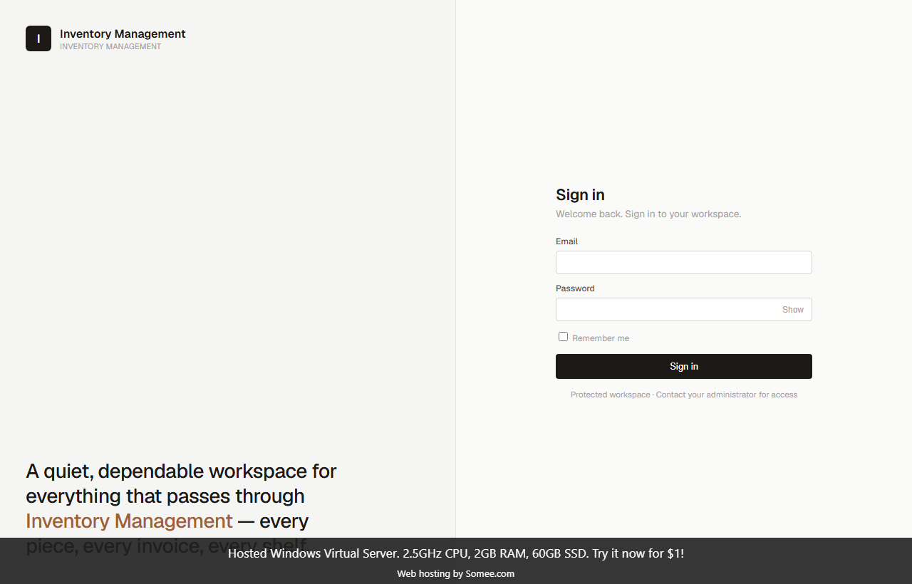

InventoryBase — Inventory Management System
A full-featured inventory & stock management platform built on a 3-layer clean architecture (Core / Infrastructure / Web). Handles products, purchases, sales, expenses and suppliers with a real-time stock ledger, role-based access, and server-side data tables. Currently deployed and in use.
deps = [ ASP.NET Core MVC, EF Core, SQL Server, Identity Auth, Repository / UoW, Tabulator ]